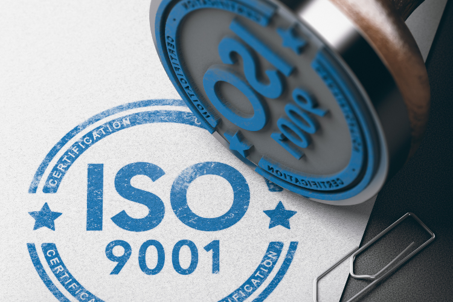

¿Por qué son importantes las certificaciones de calidad?
En la industria de la construcción metálica, la calidad no es un lujo, sino una necesidad. Las certificaciones internacionales como ISO 9001 o los estándares de la AWS para soldadores son fundamentales para garantizar confianza, seguridad y cumplimiento normativo en cada proyecto.
Ventajas de contar con certificaciones
- Confianza del cliente: aseguran que el trabajo se ejecuta bajo procesos controlados y validados.
- Mayor competitividad: diferencian a la empresa frente a competidores no certificados.
- Prevención de riesgos: reducen la probabilidad de fallas estructurales y accidentes en obra.
- Cumplimiento normativo: facilitan aprobaciones en licitaciones y trámites municipales.
Ejemplo en proyectos de L.U.D.I.E.R
Nuestros proyectos incorporan ensayos no destructivos, soldadores certificados y control de calidad en cada fase. Esto nos ha permitido trabajar con reconocidas inmobiliarias y constructoras que exigen altos estándares.
Conclusión
Apostar por certificaciones de calidad no solo fortalece la reputación de una empresa, sino que asegura que cada estructura metálica sea segura, durable y confiable. En L.U.D.I.E.R seguimos este camino, brindando confianza y respaldo a cada uno de nuestros clientes.
Contáctanos para más información